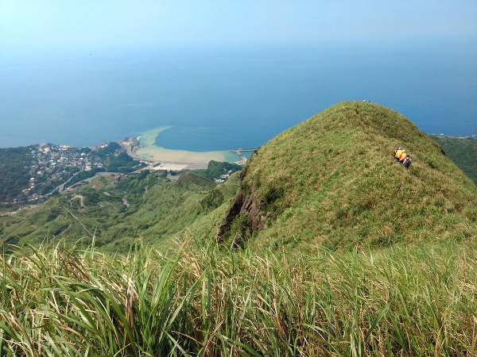
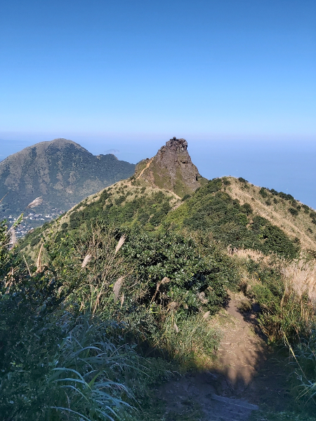
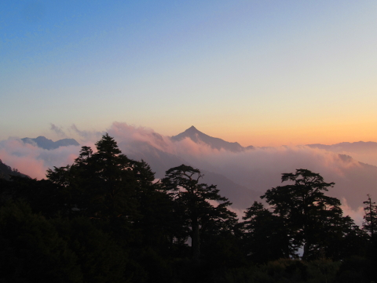
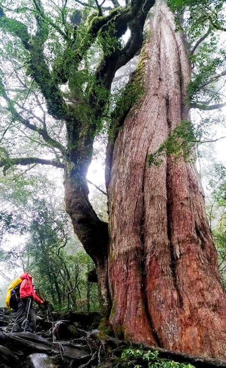

Start here
7 Reasons Why You Should Hike in Taiwan
If you have a short stay in Taiwan, have you ever wondered what
you can do during your stay? If you Google and think the only
things you can do here are limited to visiting the National Palace
of Museum and eating as many strange foods as you can at Shi-Lin
Night Market with the crowd, you have come to the right place
because you are about to experience the unique nature Taiwan can
offer other than foods...

If you can only choose one hike, this is the one and you can do it for free:
Mt. Teapot, Mt. Banping and Mt. Canguanliao
Being a tiny has its own advantages, which means hiking in Taiwan can allow you to enjoy the mountains and ocean views from the summits. If you can only pick up one trail to hike near Taipei and you want some challenges, Mt. Teapot, Mt. Banping and Mt. Canguanliao are definitely the trails for you, not to mention the nearby tourist attractions like Jinguaqshi and Jiufeng to visit and have exotic local foods after your hike…

4 Ways to Hike in Taiwan with Pros and Cons
It seems easy to hike in Taiwan, and I’ve met several international visitors Google their way to the trails, and there are many great blogs in English to tell you where you can hike in Taiwan. But there are other options to enjoy hiking in Taiwan, and here are the pros and cons of each method...

15 Things you need to know before you hit the trails in Taiwan
Whether you plan to hike alone or with a local group when you visit Taiwan, there are at least 15 things you need to know in advance so you can have a more enjoyable hiking experience. You might already be an experienced hiker back home, but the jungle-like muddy terrains and the humid weather may still catch you off-guard on the trails…

Other Hiking Blogs and Resources about Taiwan
There are many wonderful blogs, YouTube channels, and resources for you to dig in if you want to know more about hiking or other outdoor activities in Taiwan.
I try to find the English ones as much as I can, but you can always use Google Translate to get some ideas about the content if it's written in Chinese.
You can also find hiking trails in other parts of Taiwan if you plan to have a long stay...